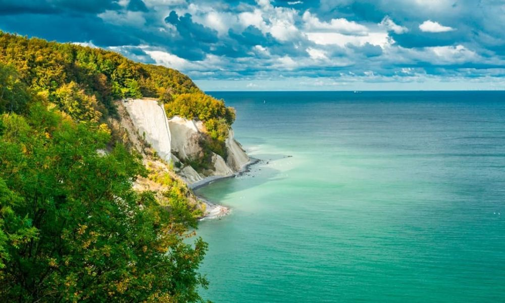

Descoperă Rügen - O aventură în insula pitorească
Rügen este o insulă pitorească din Germania, oferind o varietate de atracții pentru vizitatori:
-

Stâncile de cretă - Peisaje impresionante
Stâncile albe de cretă, cunoscute și sub numele de "Rezervația Naturală Königsstuhl", oferă priveliși spectaculoase.
-

Parcul Național Jasmund - Natură sălbatică
Această zonă protejată găzduiește o varietate de peisaje naturale, plante rare și faună sălbatică.
-

Binz - Stațiune de pe coastă
O stațiune elegantă pe malul mării cu plaje frumoase, arhitectură istorică și o atmosferă relaxantă.
-

Rasender Roland - Tren nostalgic
Acest tren cu abur oferă o modalitate pitorească de a explora insula și peisajele ei.
Concluzii
Rügen oferă o combinație unică de frumusețe naturală, plaje și istorie, creând o destinație captivantă pentru călători.